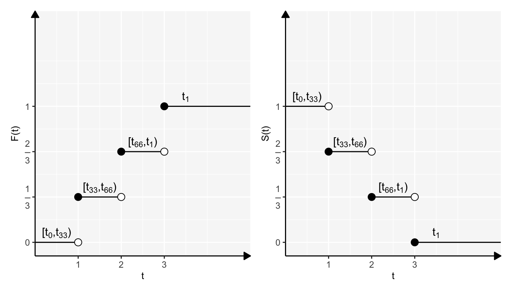

Capítulo 4 Parámetros Poblacionales
Si conocemos la distribución de \(T\) (cuando sea posible) es importante extraer cierta información que nos ayude a sacar conclusiones sobre los tiempos de supervivencia; a saber, información sobre su(s) parámetro(s). Aunque es habitual pensar a \(T\) como una variable aleatoria continua, a continuación presentaremos parámetros poblacionales en términos de la función de superviviencia para el caso continuo y discreto.
4.1 Media
Caso continuo
Para el caso continuo se tiene:
\[ \mu=\mathbb{E}[T]=\int_{0}^{\infty}\mathbb{P}(T>t)=\int_{0}^{\infty}S(t)dt \]
La demostración se queda como ejercicio al alumno.
Caso discreto
\(\mu\) en este caso es de la forma:
\[ \mu=\mathbb{E}[T]=\sum_{k=1}^{\infty}u_kf(u_k)=\sum_{k=1}^{\infty}S(u_k) \]
La demostración se queda como ejercicio al alumno.
4.2 Varianza
Caso continuo
Para este caso la varianza se ve como:
\[ \sigma^2=Var[T]=\mathbb{E}[T^2]-(\mathbb{E}[T])^2=2\int_{0}^{\infty}tS(t)dt-\left(\int_{0}^{\infty}S(t)dt\right)^2 \]
La demostración de la igualdad anterior se obtiene si se observa que:
\[ \mathbb{E}[T^2]=\int_{0}^{\infty}t^2f(t)dt=-t^2S(t)|_0^{\infty}+2\int_{0}^{\infty}tS(t)dt=2\int_{0}^{\infty}tS(t)dt \]
Y ocupando que:
\[ \mathbb{E}[T]=\int_{0}^{\infty}S(t)dt \]
Caso discreto
De manera similar:
\[ \sigma^2=Var[T]=\mathbb{E}[T^2]-(\mathbb{E}[T])^2=2\sum_{k=1}^{\infty}u_kS(u_k)-\left(\sum_{k=1}^{\infty}S(u_k)\right)^2 \]
La demostración se queda de ejercicio al alumno.
4.3 Función de Media Residual
Para individuos de edad \(x\) este parámetro, denotado por \(mr(x)\), mide la esperanza de vida residual; esto es, “la esperanza de vida que les queda a partir de la edad \(x\)”.
Caso continuo
Se define como:
\[ mr(x)=\mathbb{E}[T-x|T>x]=\frac{\mathbb{E}[T-x]}{\mathbb{P}(T>x)}=\frac{\int_x^{\infty}(t-x)f(t)dt}{S(x)}=\frac{\int_x^{\infty}S(t)dt}{S(x)} \]
Caso discreto
Para este caso es:
\[ mr(u_x)=\frac{\sum_{k=x}^{\infty}S(u_k)}{S(u_x)} \]
4.4 Cuantiles de Orden \(p\)
El cálculo de diversos cuantiles nos permitirá hacer comparaciones entre diversos grupos de sujetos, además de obtener información sobre los tiempos de falla, por ejemplo, el tiempo mediano de falla (a veces es mejor el cálculo de la mediana que la media).
Caso continuo
El cuantil o percentil, \(t_p\), de orden \(p\) de la variable aleatoria continua \(T\) será aquel que:
\[ S(t_p)=1-p \]
Si queremos el tiempo mediano de los tiempos de supervivencia entonces debemos calcular \(t_{0.5}\) talque:
\[ S(t_{0.5})=0.5 \]
Caso discreto
En este caso \(t_p\) es: \[ t_p=inf\{t: S(t) \leq 1-p\} \]
Ejemplo 1
Siguiendo el ejemplo presentado en la sección 3.2, se tiene lo siguiente:
- Función de supervivencia de \(T\): \(S(t) = \mathbb{P}(T>t)=\left\{\begin{array}{ll}1 & \mbox{si }t=1\\\frac{2}{3} & \mbox{si } t=2\\\frac{1}{3} & \mbox{si } t = 3\\0 & \mbox{si }t>3\end{array}\right.\)
- Función de riesgo: \(h(t) =\left\{\begin{array}{ll}\frac{1}{3} & \mbox{si }t=1\\\frac{1}{2} & \mbox{si } t=2\\\ 1 & \mbox{si } t = 3\end{array}\right.\)
- \(\mu = \mathbb{E}(T) = \sum\limits_{t = 1}^3S(t) = \sum\limits_{t = 1}^3t\cdot f(t) = 2\).
- \(mrl(2) = \frac{1/3+0}{2/3} = \frac{1}{2}\).
- \(t_{0.75} = inf\{t: S(t) \leq 0.15\} = 3\)
Con la finalidad de aclarar la distribución de los cuantiles en una distribución discreta, se dejan las siguientes gráficas correspondientes a este ejercicio.

Ejemplo 2
Sea \(T\) una v.a con distribución uniforme continua en \((0,100)\) unidades días.
- Encontrar la función de supervivencia y evaluar la supervivencia para 30 y 35 años.
- Encontrar la función de riesgo y evaluar el riesgo para 60 días.
- Encontrar la esperanza de riesgo residual a los 75 días.
Soluciones:
- \[ f_T(t) = \left\{ \begin{array}{ll} \frac{1}{100} & \forall\ \ t\in [0,100]\\ 0 & e.o.c \end{array} \right. \implies S(t) = 1-\int_0^t\frac{1}{100}dv = 1-\frac{t}{100} \] \[ \implies S(30) = \mathbb{P}(T>30) = 1-\frac{30}{100};\ \ S(35) = 1- \frac{35}{100} \]
- \[ h(t) = \frac{f(t)}{S(t)} = \frac{\frac{1}{100}}{1-\frac{1}{100}} = \frac{1}{100-t}\\ \implies h(60) = \frac{1}{100-60} = \frac{1}{40} \]
- \[ mrl(x) = \mathbb{E}(T-75 | T>75) = \frac{\mathbb{E}(T-75)}{\mathbb{P}(T>75)} = \frac{\int_x^\infty(t-75)f(t)dt}{S(75)} = \frac{\int_x^{100}(t-75)\frac{1}{100}dt}{1-\frac{75}{100}} \] \[ \implies mrl(75) = \frac{1}{25}\int_{75}^{100}(t-75)dt = \frac{1}{25}\left(\frac{100^2}{2}-\frac{75^2}{2}\right)-\frac{75(100-75)}{25} = \frac{25}{2} = 12.5 \] Otra solución
Demostrandose que \(\int_x^\infty(t-x)f(t) dt = \int_x^\infty S(t)dt\)
\[ \implies mrl(75) = \frac{\int_{75}^{100}(t-75)\frac{1}{100}dt}{S(75)} = \frac{\int_{75}^{100}S(75)dt}{S(75)} = 12.5 \]